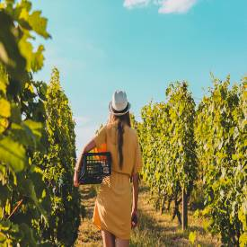
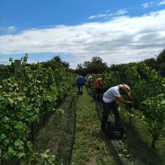
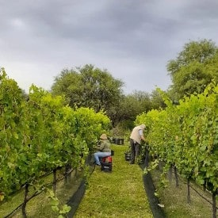
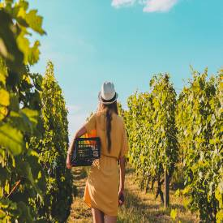
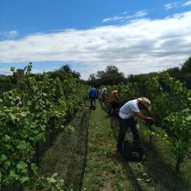
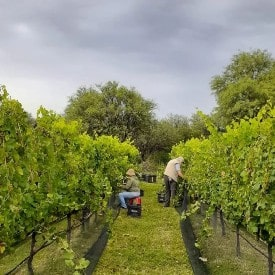

Una fuerte inversion en un sistema de riego moderno y una reserva acuífera de 100Mil litros nos permitió mejorar la humedad del suelo generando uvas mucho mas equilibradas en cuanto a su acidez mejorando ostensiblemente la calidad de nuestro producto final. Otra inversión importante ha sido en sistemas de protección en contra de condiciones climáticas adversas lo cual nos ha permitido salvaguardar un gran porcentaje de nuestras plantaciones dando como resultado un incremento en la producción anual.
GUANACO BOLEADO. CÓRDOBA.
NUESTRO VIÑEDO
Largos y hermosos atardeceres con temperaturas agradables y rayos uv de baja intensidad favorecen el crecimiento y maduración de nuestras uvas.
 




